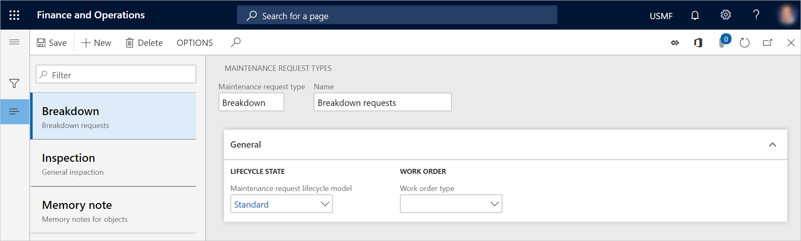

Wartungsanfragetypen
Important
Dynamics 365 for Finance and Operations hat sich zu speziell entwickelten Anwendungen entwickelt, mit denen Sie bestimmte Geschäftsfunktionen verwalten können. Weitere Informationen zu diesen Änderungen finden Sie im Dynamics 365-Lizenzierungshandbuch.
Wartungsanfragetypen werden verwendet, um Wartungsanfragen zu kategorisieren. Sie können beispielsweise Wartungsanfragetypen haben, die sich auf vorbeugende Wartung und korrektive Wartung beziehen. Oder Sie haben möglicherweise einen speziellen Wartungsanfragetyp, der verwendet wird, um die Reparatur von Anlagen (Depotreparatur) zu verwalten.
Ein Wartungsanfragetyp definiert die Zuordnung zu einer Wartungsanfrage-Lebenszyklusstatusgruppe (Wartungsanfrage-Lebenszyklusmodell). Wartungsanfrage-Lebenszyklusmodelle definieren die Lebenszyklusstatus, die für eine Wartungsanfrage festgelegt werden können. (Beispiele für Wartungsanfrage-Lebenszyklusstatus sind Erstellt, Aktiv und Beendet.)
- Wählen Sie Anlagenverwaltung > Einstellungen > Wartungsanfragen > Wartungsanfragetypen.
- Wählen Sie Neu aus, um einen Wartungsanfragetyp zu erstellen.
- Geben Sie im Feld Wartungsanfragetyp eine Kennung für den Wartungsanfragetyp ein.
- Geben Sie im Feld Name einen Namen ein.
- Wählen Sie auf dem Inforegister Allgemein im Feld Wartungsanfrage-Lebenszyklusmodell ein Wartungsanfrage-Lebenszyklusmodell aus.
- Wählen Sie im Feld Arbeitsauftragstyp einen Arbeitsauftragstyp aus. Wenn eine Wartungsanfrage in einen Arbeitsauftrag konvertiert wird, erhält der Arbeitsauftrag automatisch den Arbeitsauftragstyp aus, der dem Wartungsanfragetyp zugeordnet ist.
Die folgende Abbildung zeigt ein Beispiel der Seite Wartungsanfragetypen.
